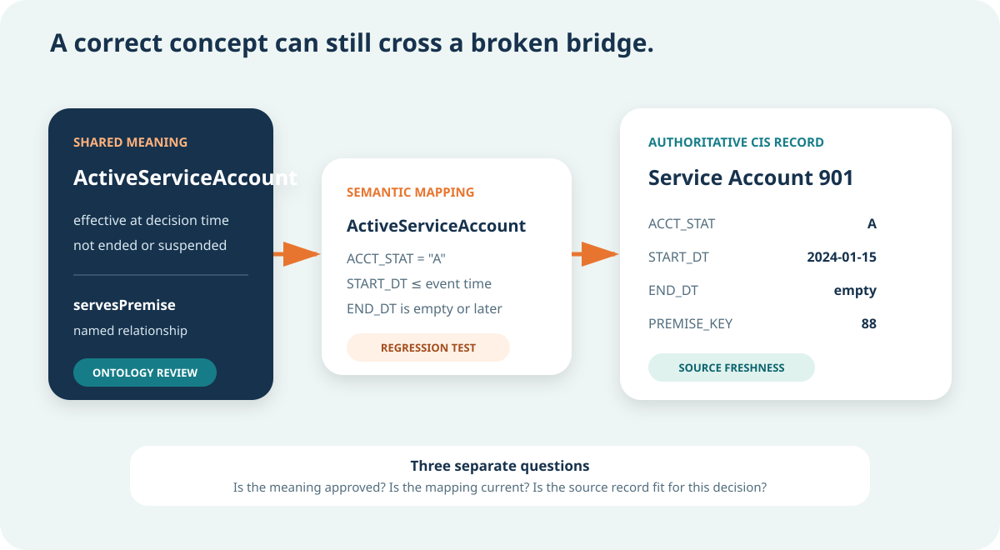
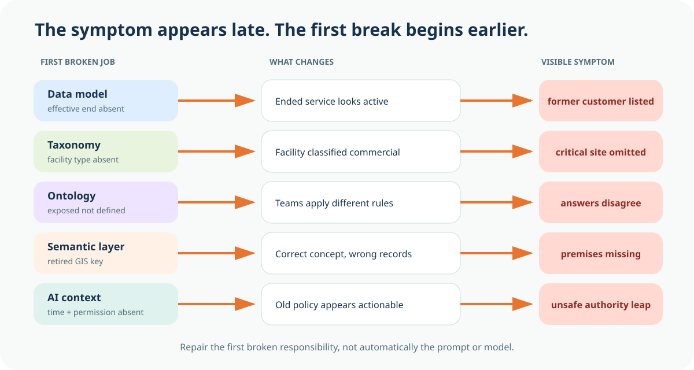

CIS account-status table
Columns store status code, effective start, effective end, and service-address key.
Separate structure, classification, shared meaning, enterprise mapping, and runtime AI context before choosing a technology or trusting an answer.
Misconception we will change: Data models, taxonomies, ontologies, semantic layers, and AI context are interchangeable names for one technical layer.
{'It is 2:10 a.m. A pressure event has affected Zone 3. The duty manager asks a question that sounds straightforward': 'Which active critical-facility customers may be exposed, what evidence supports the list, and which response procedure applies tonight?'}
The utility is not starting from nothing. SCADA has the event. GIS has the pressure zone and premises. CIS has accounts and service status. The document system has procedures. A dashboard already joins several tables. An AI assistant can retrieve text and generate a polished summary.
{'Yet the room stops on four ordinary words': 'active, critical facility, exposed, and current. One team uses billing status to define active. Another uses an effective service date. GIS identifies facilities differently from the customer system. Two procedures have similar titles, but only one is in force. The data exists. The shared meaning, mappings, time, permissions, and decision authority are mixed together.'}

Choose the strongest answer, then check it. The feedback explains the boundary.
People often meet these terms in a vendor diagram. That makes them sound like competing products or stacked boxes. Begin somewhere simpler. Each term earns its place by answering a different question.
A data model asks how information is structured for a system, application, integration, or report. A taxonomy asks how terms are classified and organized. An ontology asks what shared concepts and relationships mean. A semantic layer asks how those meanings connect to fields, tables, metrics, application interfaces, and authoritative sources. AI context asks what a model or agent needs for this specific task, at this time, under these permissions and limits.
These jobs cooperate. They are not interchangeable. A CIS table can store service status without establishing one enterprise definition of active service. A critical-facility hierarchy can classify hospitals and nursing facilities without saying which service account serves which premise. An ontology can define that relationship without pointing to tonight's current CIS row. A mapping can connect the concept to fields without knowing what the duty manager is permitted to do. A runtime context package can include relevant records and policies without becoming the permanent ontology.

Match each ordinary-language question to the job that answers it. Check all rows together, then revise any row that needs another look.
Now use the distinction under pressure. The desk below contains records, lists, definitions, mappings, and controls from the Zone 3 event. Your task is not to guess the file format. Your task is to identify the artifact's primary job in this bounded decision.
Some artifacts could support more than one job. That is normal. A spreadsheet might hold a taxonomy in one process and a semantic mapping in another. The feedback explains why one job is primary here. This is how architecture conversations become precise without pretending the enterprise is perfectly tidy.
Choose the primary job each artifact performs in the Zone 3 decision. Check the entire desk, read every explanation, and retry any misplaced artifact.
Columns store status code, effective start, effective end, and service-address key.
Hospital, dialysis center, nursing facility, school, and emergency shelter.
A shared definition based on effective service and approved status rules.
A service account serves a premise, with agreed direction and meaning.
Connect ActiveServiceAccount to ACCT_STAT, START_DT, and END_DT.
Maps the enterprise PressureZone identifier to the current GIS feature key.
Event 771, Zone 3, observed at 2:10 a.m., with current severity.
Evaluate customer status and procedure validity as of 2:10 a.m.
The approved procedure version in force for this event and jurisdiction.
User may prepare a draft exposure list but may not issue customer notifications.
CIS and GIS disagree on whether Premise 88 is a critical facility.
Label the result for human review and prohibit automated operational action.
Suppose the ontology defines an Active Service Account as a service account whose service is effective at the decision time and is not ended or suspended under the approved rule. It also defines that a service account serves a premise, a premise lies in a pressure zone, and a pressure event affects a zone.
That shared meaning is reusable. But the ontology does not automatically know that CIS column ACCT_STAT uses A for active, that START_DT and END_DT control effective time, or that a recent system upgrade renamed one field. The semantic layer carries tested mappings from shared concepts to authoritative enterprise structures.
This boundary matters because a correct definition and a broken mapping can coexist. If the concept is wrong, change control belongs in the ontology process. If the mapping points to a retired field, repair belongs in the semantic connection. If the current record is stale, repair belongs in source-data operations. Calling all three problems an AI hallucination hides the first broken responsibility.

Choose the strongest answer, then check it. The feedback explains the boundary.
The Zone 3 question is not answered only by retrieving customer rows. The model or agent needs the event identifier, effective time, approved definitions, mapped evidence, current procedure, user permission, unresolved conflicts, workflow state, and output limits. That bounded package is AI context.
A context engine is not the package. It is the governed mechanism that retrieves, filters, validates, and assembles the package. One implementation may combine graph queries, table queries, document retrieval, policy checks, and workflow state. Another may use different technologies. The architectural job remains the same.
More context is not automatically better context. Dumping every customer record, every procedure version, or another district's incident file into the prompt can increase ambiguity, expose unauthorized information, and make evidence harder to trace. Good context reduces ambiguity and unsupported generation. It does not make a generative model perfectly deterministic.

Select every item the bounded task needs. Leave irrelevant or unauthorized material outside the packet.
A failure usually becomes visible at the end. The answer omits a facility, uses an outdated procedure, or includes an unauthorized account. Teams then reach for the component closest to the symptom: the prompt, model, dashboard, or agent.
The safer method is to walk backward until you find the first broken job. A missing field is not the same as a missing category. A missing category is not the same as a relationship no one has defined. A correct definition with a stale field mapping is not the same as a complete mapping with the wrong runtime time or permission.
Use the laboratory to remove each job. Read how the failure changes as it travels toward the answer. The point is not that every utility needs five products. The point is that every consequential answer needs these responsibilities addressed somewhere.

Select each missing job. Follow the consequence from the first break to the final answer, then read the first repair and accountable role.
Follow the consequence
First repair: Add and govern the missing effective-time structure in the source model.
Accountable role: CIS product owner with Customer Operations
Follow the consequence
First repair: Update the governed critical-facility classification and review downstream use.
Accountable role: Domain steward with Emergency Management
Follow the consequence
First repair: Approve a bounded exposure concept and its relationships before remapping.
Accountable role: Domain governance council
Follow the consequence
First repair: Repair and regression-test the concept-to-source mapping.
Accountable role: Semantic mapping owner with GIS
Follow the consequence
First repair: Add time, permission, conflicts, workflow state, and output limits to the runtime contract.
Accountable role: Application owner with Risk and Operations
Choose the strongest answer, then check it. The feedback explains the boundary.
In wastewater, an overflow response asks which assets are upstream, which permit condition applies, and which customers or waterways may be affected. The data model structures work orders, network assets, samples, and events. The taxonomy classifies overflow severity and response type. The ontology defines assets, flow relationships, events, impacts, and obligations. The semantic layer maps those meanings to CMMS, GIS, laboratory, and permit sources. Runtime context packages the actual event, current weather, effective permit, operator permission, conflicts, and action limits.
In stormwater, an inspection assistant retrieves the correct permit PDF but quotes a condition that applied before the latest amendment. Retrieval succeeded. The failure is temporal authority inside runtime context and provenance, not simply document similarity. If the ontology also fails to distinguish an outfall from a monitoring location, that is a separate shared-meaning problem with a different repair.
This is the value of the distinction map. It does not force RDF or a knowledge graph into every small problem. A governed table may be sufficient when one bounded source, one stable definition, and one accountable process answer the question. Relationships earn a graph when identity, traversal, provenance, reuse, or inference carries material value.
Choose the strongest answer, then check it. The feedback explains the boundary.
Your final task is not to draw a perfect enterprise architecture. Choose one bounded utility question. Name one artifact or responsibility for each meaning job. Assign an accountable owner. Record the first known gap. State what the map does not authorize.
A useful map is specific enough for another team to inspect. "Customer data" is too vague. "CIS account status and effective dates governed by Customer Operations" is reviewable. "Use AI context" is too vague. "Include event time, approved exposure definition, current procedure, operator permission, unresolved conflicts, and a draft-only output limit" is reviewable.
The map becomes one section of your Utility Knowledge Spine Fieldbook. Module 16 will develop the full AI Context Contract. Here you include only enough runtime context to prove that it is a different job from structure, classification, meaning, and mapping.
Choose one bounded utility question. Name the artifact or responsibility for all five jobs, assign owners, record the first gap, and state what the map does not authorize.
No. An ontology defines shared concepts and relationships. A semantic layer connects those meanings to governed fields, tables, metrics, application interfaces, and authoritative sources. Product terminology varies, so make the responsibility explicit.
A taxonomy is useful for classification and hierarchy. It does not by itself express every relationship, rule, identity decision, mapping, permission, or runtime condition needed for a utility answer.
Yes. A data model can carry definitions and constraints for its system or application. The distinction is scope. An ontology aims to provide shared domain meaning that can outlive or connect several system-specific models.
A prompt may carry part of the context, but the runtime package also includes retrieved evidence, definitions, policy, time, permission, workflow state, conflicts, and output limits. The prompt is one delivery mechanism, not the entire architecture.
No. Better context can reduce ambiguity and make evidence easier to trace, but generative output may still vary. Deterministic checks, validation, constrained actions, and human review remain separate controls.
Not necessarily. A graph can connect meaning to data that stays in existing systems through governed mappings or federation. Materialize only where latency, reliability, cost, security, or operational needs justify it.
A table may be enough when one bounded source, one stable definition, and one accountable process answer the question without complex identity, traversal, provenance, or reuse. Choose the smallest architecture that can defend the decision.
The Zone 3 event, systems, records, and organizations are instructional. The five-job model is an OWOS teaching framework. W3C sources support RDF, RDF Schema, and ontology concepts. NIST supports the need to govern generative AI risks. This lesson does not authorize an operational response or establish that every AI application requires RDF.
See the concepts, sources, competency, and evidence boundary behind this module.
Discuss which relationship your utility repeatedly rebuilds by hand. Community discussion is not governed evidence.
Complete the decision, distinctions, triage desk, mapping and context checks, failure laboratory, transfer diagnosis, and Five-Layer Meaning Map.